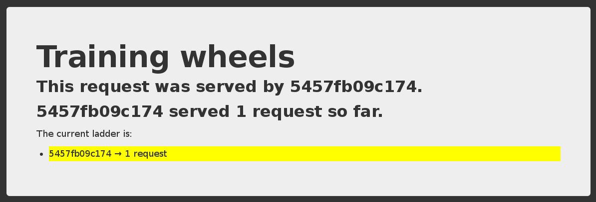

Lviv University
Gentle introduction to YAML
YAML Ain’t Markup Language (according to yaml.org)
Almost required when working with containers:
Docker Compose files
Kubernetes manifests
Many CI pipelines (GitHub, GitLab…)
Might be a bit difficult to understand though
What is it?
Trying YAML
Method 1: in the browser
Method 2: in a shell
Method 3: in Python
Basic stuff
Strings, numbers, boolean values, null
Sequences (=arrays, lists)
Mappings (=objects)
Superset of JSON
(if you know JSON, you can just write JSON)
Comments start with #
A single file can have multiple documents
(separated by --- on a single line)
Mappings
Example: mapping strings to numbers
Example: the same mapping, without the double-quotes
Example: the same mapping, in “block collection style”
Combining types
In a sequence (or mapping) we can have different types
(including other sequences or mappings)
Example:
Note that we need to quote “Arthur” because of the comma
Note that we don’t have the same number of elements in questions and answers
⚠️ Automatic times
22:22 becomes 1342
Thats 22 minutes and 22 seconds = 1342 seconds
Again, it should be quoted
Document separator
A single YAML file can have multiple documents separated by ---:
Some folks like to add an extra --- at the beginning and/or at the end
(it’s not mandatory but can help e.g. to cat multiple files together)
Multi-line strings
Try the following block in a YAML parser:
See https://yaml-multiline.info/ for advanced multi-line tips!
(E.g. to strip or keep extra \n characters at the end of the block.)
YAML, good or evil?
Natural progression from XML to JSON to YAML
There are other data languages out there
(e.g. TOML, HCL, domain-specific things crafted with Ruby, CUE…)
Compromises are made, for instance:
more user-friendly → more “magic” with side effects
more powerful → steeper learning curve
Love it or loathe it but it’s a good idea to understand it!
Interesting tool if you appreciate YAML: https://carvel.dev/ytt/
Compose for development stacks
Dockerfile = great to build one container image.
What if we have multiple containers?
What if some of them require particular docker run parameters?
How do we connect them all together?
… Compose solves these use-cases (and a few more).
Life before Compose
Before we had Compose, we would typically write custom scripts to:
build container images,
run containers using these images,
connect the containers together,
rebuild, restart, update these images and containers.
Life with Compose
Compose enables a simple, powerful onboarding workflow:
Checkout our code.
Run docker compose up.
Our app is up and running!
Life after Compose
(Or: when do we need something else?)
Compose is not an orchestrator
It isn’t designed to need to run containers on multiple nodes
(it can, however, work with Docker Swarm Mode)
Compose isn’t ideal if we want to run containers on Kubernetes
it uses different concepts (Compose services ≠ Kubernetes services)
it needs a Docker Engine (although containerd support might be coming)
Compose walkthrough
Write Dockerfiles
Describe our stack of containers in a YAML file (the “Compose file”)
docker compose up (or docker compose up -d to run in the background)
Compose pulls and builds the required images, and starts the containers
Compose shows the combined logs of all the containers
(if running in the background, use docker compose logs)
Hit Ctrl-C to stop the whole stack
(if running in the background, use docker compose stop)
Iterating
After making changes to our source code, we can:
docker compose build to rebuild container images
docker compose up to restart the stack with the new images
We can also combine both with docker compose up --build
Compose will be smart, and only recreate the containers that have changed.
When working with interpreted languages:
don’t rebuild each time
leverage a volumes section instead
Launching Our First Stack with Compose
Launching Our First Stack with Compose
We should see a web page like this:

Each time we reload, the counter should increase.
Stopping the app
When we hit Ctrl-C, Compose tries to gracefully terminate all of the containers.
After ten seconds (or if we press ^C again) it will forcibly kill them.
The Compose file
Historically: docker-compose.yml or .yaml
Recently (kind of): can also be named compose.yml or .yaml
(Since version 1.28.6, March 2021)
Compose file structure
A Compose file has multiple sections:
services is mandatory. Each service corresponds to a container.
version is optional (it used to be mandatory). It can be ignored.
networks is optional and indicates to which networks containers should be connected.
(By default, containers will be connected on a private, per-compose-file network.)
volumes is optional and can define volumes to be used and/or shared by the containers.
Compose file versions
Version 1 is legacy and shouldn’t be used.
(If you see a Compose file without a services block, it’s a legacy v1 file.)
Version 2 added support for networks and volumes.
Version 3 added support for deployment options (scaling, rolling updates, etc).
The Docker documentation has excellent information about the Compose file format if you need to know more about versions.
Containers in Compose file
Each service in the YAML file must contain either build, or image.
build indicates a path containing a Dockerfile.
image indicates an image name (local, or on a registry).
If both are specified, an image will be built from the build directory and named image.
The other parameters are optional.
They encode the parameters that you would typically add to docker run.
Sometimes they have several minor improvements.
Container parameters
command indicates what to run (like CMD in a Dockerfile).
ports translates to one (or multiple) -p options to map ports.
You can specify local ports (i.e. x:y to expose public port x).
volumes translates to one (or multiple) -v options.
You can use relative paths here.
For the full list, check: https://docs.docker.com/compose/compose-file/
Environment variables
We can use environment variables in Compose files
(like $THIS or ${THAT})
We can provide default values, e.g. ${PORT-8000}
Compose will also automatically load the environment file .env
(it should contain VAR=value, one per line)
This is a great way to customize build and run parameters
(base image versions to use, build and run secrets, port numbers…)
Configuring a Compose stack
Follow 12-factor app configuration principles
(configure the app through environment variables)
Provide (in the repo) a default environment file suitable for development
(no secret or sensitive value)
Copy the default environment file to .env and tweak it
(or: provide a script to generate .env from a template)
Running multiple copies of a stack
Copy the stack in two different directories, e.g. front and frontcopy
Compose prefixes images and containers with the directory name:
front_www, front_www_1, front_db_1
frontcopy_www, frontcopy_www_1, frontcopy_db_1
Alternatively, use docker compose -p frontcopy
(to set the --project-name of a stack, which default to the dir name)
Each copy is isolated from the others (runs on a different network)
Checking stack status
We have ps, docker ps, and similarly, docker compose ps:
Shows the status of all the containers of our stack.
Doesn’t show the other containers.
Cleaning up (1)
If you have started your application in the background with Compose and want to stop it easily, you can use the kill command:
Likewise, docker compose rm will let you remove containers (after confirmation):
Cleaning up (2)
Alternatively, docker compose down will stop and remove containers.
It will also remove other resources, like networks that were created for the application.
Use docker compose down -v to remove everything including volumes.
Special handling of volumes
When an image gets updated, Compose automatically creates a new container
The data in the old container is lost…
…Except if the container is using a volume
Compose will then re-attach that volume to the new container
(and data is then retained across database upgrades)
All good database images use volumes
(e.g. all official images)
Gotchas with volumes
Unfortunately, Docker volumes don’t have labels or metadata
Compose tracks volumes thanks to their associated container
If the container is deleted, the volume gets orphaned
Example: docker compose down && docker compose up
the old volume still exists, detached from its container
a new volume gets created
docker compose down -v/--volumes deletes volumes
(but not docker compose down && docker compose down -v!)
Managing complex stacks
Compose provides multiple features to manage complex stacks
(with many containers)
-f/--file/$COMPOSE_FILE can be a list of Compose files
(separated by : and merged together)
Services can be assigned to one or more profiles
--profile/$COMPOSE_PROFILE can be a list of comma-separated profiles
(see Using service profiles in the Compose documentation)
These variables can be set in .env
Dependencies
A service can have a depends_on section
(listing one or more other services)
This is used when bringing up individual services
(e.g. docker compose up blah or docker compose run foo)
⚠️ It doesn’t make a service “wait” for another one to be up!
A bit of history and trivia
Compose was initially named “Fig”
Compose is one of the only components of Docker written in Python
(almost everything else is in Go)
In 2020, Docker introduced “Compose CLI”:
docker compose command to deploy Compose stacks to some clouds
in Go instead of Python
progressively getting feature parity with docker compose
also provides numerous improvements (e.g. leverages BuildKit by default)
Exercise — writing a Compose file
Let’s write a Compose file for the wordsmith app!
The code is at: https://github.com/jpetazzo/wordsmith